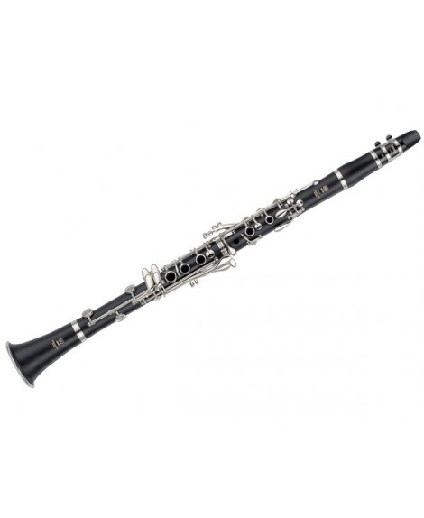

Clarinete Yamaha YCL 650e$189.99
Combinando un elegante cuerpo de ebonita con teclas de níquel, el clarinete Jean Paul USA CL-300 cuenta con un hermoso diseño y sonido, manteniendo un precio bajo.
Comprar Ahora
Trompeta Bach Stradivarius LR180S43 Bn$219.95
La trompeta profesional de Bach lr180s-43 Stradivarius está adaptado a la clave de Bb. Tiene un cuerpo ligero portátil, .459 "Medium-Large Bore, 43 tudel de Bell, 25lr (Reverse), trompeta de Monel, válvulas, y un acabado plateado.
Comprar ahora